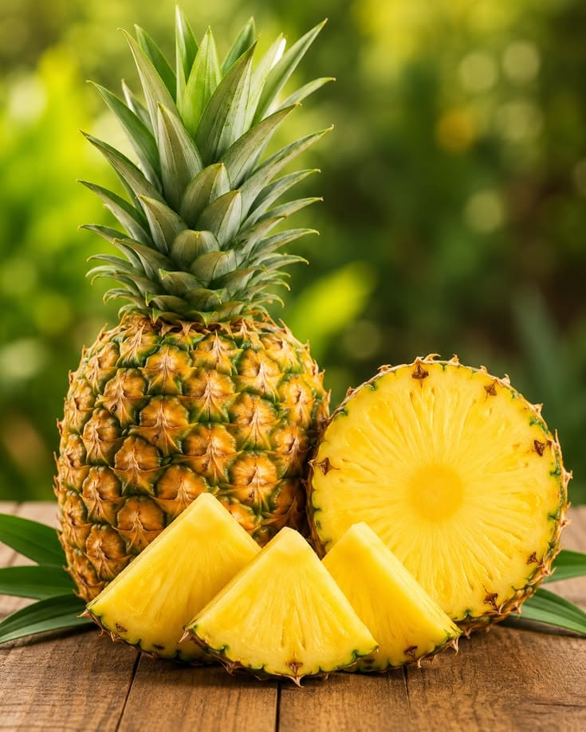

Pineapple
Ananas comosus
Important horticultural fruit crop of Northeast India.

Orange
Citrus reticulata
Popular citrus fruit grown in Meghalaya.
Banana
Musa spp.
Widely cultivated fruit crop in Northeast India.
Ginger
Zingiber officinale
Medicinal spice used for digestion and immunity.
Turmeric
Curcuma longa
Known for anti-inflammatory and healing properties.

Aloe Vera
Aloe barbadensis
Used for skin care, burns, and medicinal treatments.